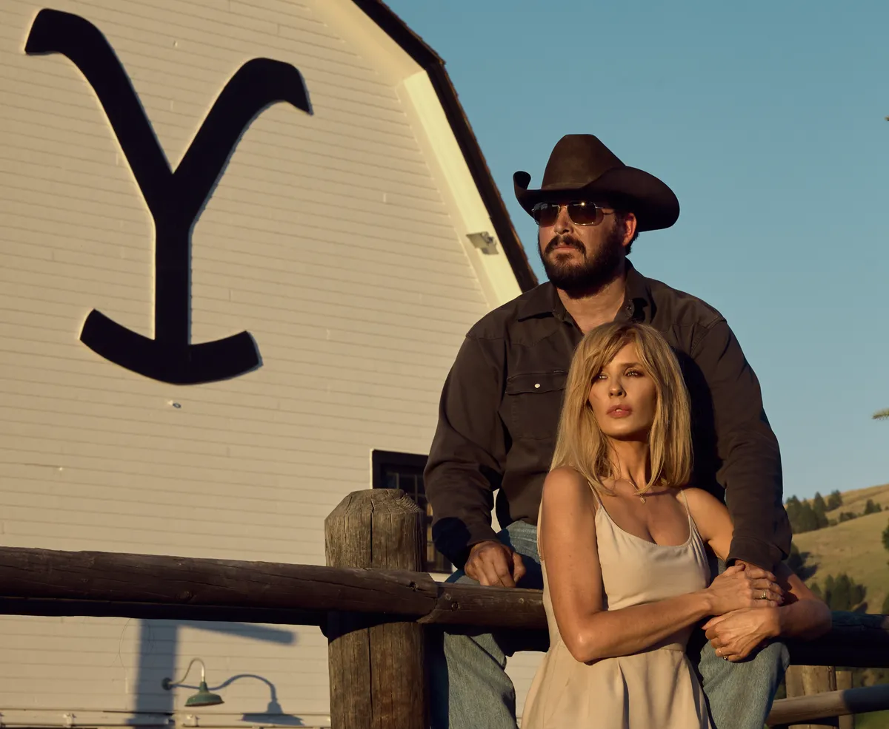
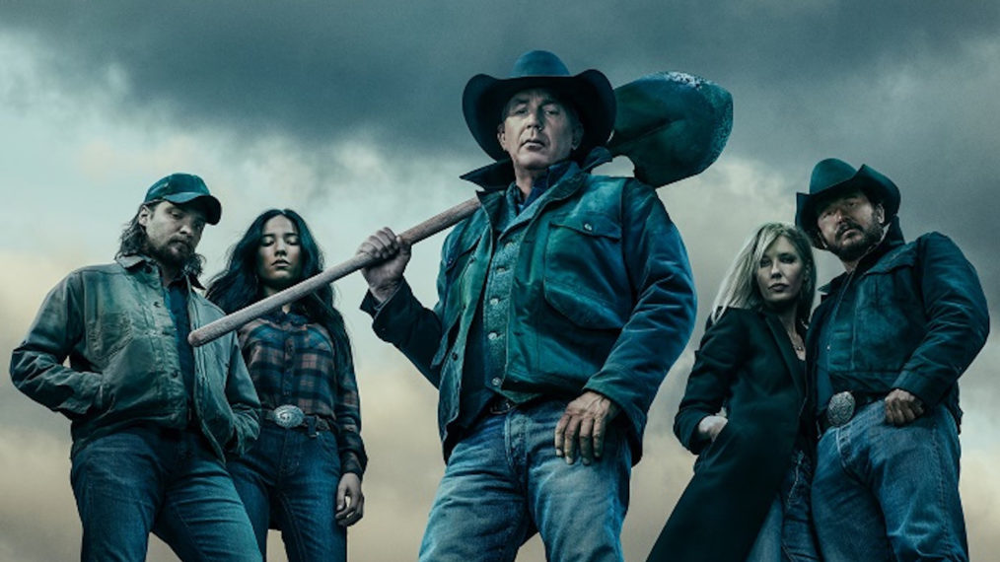

John Dutton remains steadfast in his fight against powerful developers and politicians who seek to take control of the Yellowstone Ranch. With unwavering determination, he relies on his loyal ranch hands and family to protect the land that has been in his family for generations. As tensions rise, John faces new challenges that test his resilience, forcing him to make difficult decisions to preserve his legacy.
Beth and Rip

Beth and Rip's Unbreakable Bond
Beth Dutton and Rip Wheeler's love is forged through years of devotion, pain, and unshakable loyalty. Their bond is fierce and unwavering, standing strong against the chaos that surrounds the Yellowstone Ranch. Through every battle and sacrifice, they prove that their love is as untamed and enduring as the land they fight to protect.
Dutton Family Conflict

Family Conflicts and Power Struggles
The Dutton family is deeply entrenched in internal power struggles, with Jamie Dutton frequently challenging his father, John, for control over the family legacy. His political ambitions and desire for power put him in direct conflict with his sister, Beth, whose own volatile nature makes the tension even more explosive. These power dynamics threaten to unravel the unity of the family and jeopardize the future of the ranch.